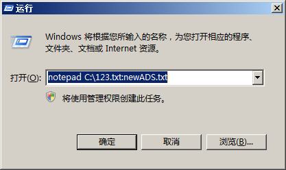
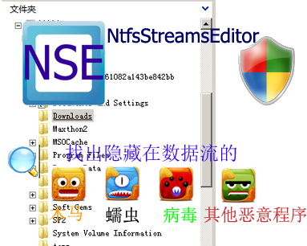

NtfsStreamsEditor2 ( Ntfs数据流处理工具) |
|
http://blog.sina.com.cn/advnetsoft
advnetsoft@sina.com |
| NtfsStreamsEditor简介： | ||
| 在Ntfs文件系统中，一些恶意程序可能隐藏在“Ntfs数据流”这样的特殊"文件"中，一般的文件管理器和工具不能发现和处理；Ntfs数据流处理工具NtfsStreamsEditor提供了强大的搜索扫描能力，帮助找出危险所在；同时NtfsStreamsEditor提供了最强大的删除、附加、导入、导出、备份和还原等完整处理手段，是Ntfs数据流处理必备的工具。 | ||
| 什么是Ntfs数据流(交换数据流或者ADS)? | ||
|
Ntfs数据流：Ntfs交换数据流 或 Ntfs可选数据流； Alternate Data Streams (ADS) Ntfs数据流给文件附加了一些额外的信息，这些本不属于该文件的信息就叫做“交换数据流”；而文件本身（宿主文件）则叫做该文件的“主数据流（Primary Data Stream）”。 Ntfs数据流允许文件与多个数据流进行关联。例如，一个名为 text.txt 的文件可以包含一个名为 text.txt:（格式是 “文件名：流名”）的可选数据流，并只允许知道该数据流名称或专门为数据流而设计的浏览程序（NtfsStreamsEditor）查看。可选数据流无法从原始文件长度中得知，但会随着对原始文件的删除，或将原始文件移动／复制到不支持可选数据流的分区（如 FAT 分区、软盘或网络共享位置）上而丢失。 Ntfs数据流在多方面有重要用途，但也容易因为被遗忘或未被探测到而白白耗费磁盘空间。 简单的创建一个数据流：已知存在C:\123.txt 文件； 按住win+R（开始_运行） 调出"运行"对话框 输入 notepad C:\123.txt:newADS.txt 回答“是” 输入字符保存就创建了一个隐藏的文件“newADS.txt”。  我们无法在“资源管理器”中看到有关数据流文件的变化。这种缺陷让木马有机可趁，通过NTFS数据流将自己隐藏起来，从此就从“资源管理器”中消失了。例如Rootkit木马中的文件隐藏功能，就是利用了NTFS数据流，而NtfsStreamsEditor完全能检测出来。 Ntfs数据流(ADS)的宿主文件可以是一个文件夹，一个文件，ADS不能没有宿主文件。 |
||
| Ntfs数据流的用途和常见的数据流。 | ||
|
可以存放一些附加的信息。 @卡巴斯基(kaspersky)杀毒软件的iStream 技术使用KAVICHS作为处理过程的标志。 @下载的文件具有Zone.Identifier的数据流:当我们使用IE浏览器把网上的可执行文件保存到NTFS文件系统的分区上，IE浏览器就会自动给下载回来的文件附加一个交换数据流，当我们双击运行带有这种数据流的文件时，系统就会出现一个“安全警告”对话框提示。 @收藏夹的网址快捷方式一般具有名为favicon的数据流，存放的就是网站图标。 @隐藏其他的一些信息，比如木马的，NtfsStreamsEditor都能检测，并确定可疑度，供用户判断（我们建议删除可疑度2以上的数据流）。  |
||
| 硬连接HardLink | ||
|
在同一个分区或者说
同一个文件系统中,多个文件的物理存贮位置一样,只是目录项分别在不同的目录下,或者文件名 (也是一个目录项) 各不相同. 这种存贮方式是硬连接。 简单的说就是用不同的名称指向一个文件，是一种特别的快捷方式。 HardLink有什么用呢？可以把一个文件，放到很多目录下，但是只占一个文件的空间，有点像那些n合1的光盘的原理。例如，可把一个2GB的GHOST镜像文件hardkink 1000次，那么看这些所有文件的属性就是2TB ，其实硬盘没这么大。 Hardlink 可以用来解决很多问题。比如说，系统里很多dll是重复的，我们就可以把一个dll 做成很多hardlink,这样可以大大的节省空间。需要注意的是，Hardlink 只实用于NTFS的分区，一个文件只能被Hardlink 1024次，而且只能在同一分区建立。 |
||
| 备注： NTFS是微软Windows NT内核的系列操作系统支持的、一个特别为网络和磁盘配额、文件加密等管理安全特性设计的磁盘格式。NTFS比FAT文件系统更稳定，更安全，功能也更为强大。如果要让FAT文件系统转换为NTFS文件系统，可以使用工具软件或者在“命令提示符 ”中输入“convert 分区盘符: /fs:ntfs”，即可将该分区的文件系统转换为NTFS。 | ||